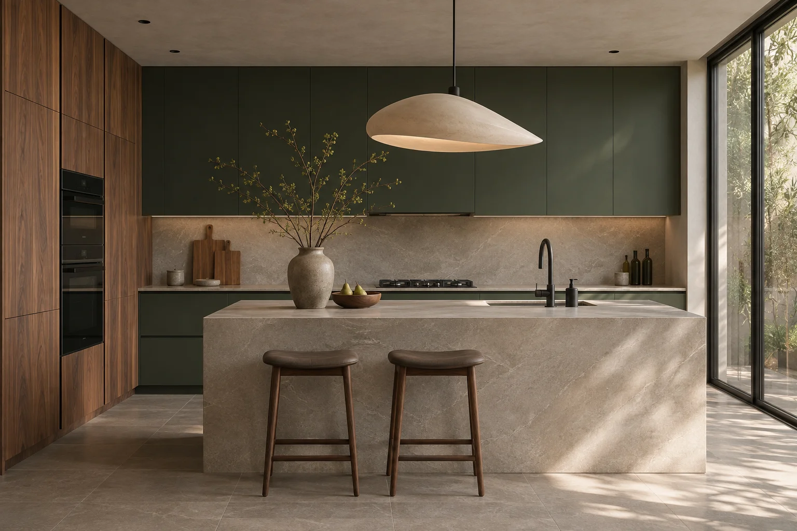

Visualize the space
Interior and furniture modelling, texturing, material mapping, lighting and V-Ray renders that bring residential spaces into focus.

Building the 3D scene…
Years in interior and product design
Years of hands-on 3D visualization, 2015 to 2022
IMOS cabinet modules created and managed
Team members coordinated at Livspace
01 Practice
From light and material to the details that make a cabinet work, I connect design intent with execution.
Interior and furniture modelling, texturing, material mapping, lighting and V-Ray renders that bring residential spaces into focus.
IMOS iX module development, factory-ready drawings, standard configurations, materials and hardware integration.
Technical reviews, product R&D support, mentoring and alignment between design, factory and site teams.
3D modelling, architectural texturing, scene lighting, V-Ray rendering and image compositing for interior design presentation work.
Project names as listed in my resume. Original project imagery is not shown here.
02 Toolkit
From the first render to the cutting list. Drag the carousel, select a tile, or choose a tool below.
3D & rendering
Architectural, interior and furniture modelling, scene composition and material mapping. Hands-on from 2015 to 2022.
Official product logos, shown only to identify the software in my toolkit. Cut Rite appears with the HOMAG logo. All trademarks belong to their respective owners.
03 Beyond the software
Practical knowledge of boards, finishes, hardware and installation, the details that make a design buildable.
04 Experience
A decade built across design, production and the people connecting them.
Education
Mahatma Gandhi University, Meghalaya · 2013-2015 · 81%
Recognition
Winner in 2014 and 2015